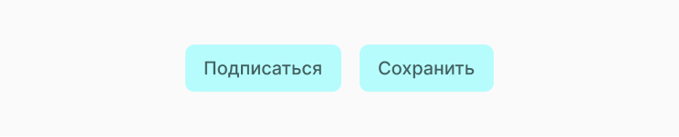

Button
Кнопки передают действия, которые пользователи могут применять. Они обычно размещаются по всему пользовательскому интерфейсу в таких местах, как: диалоги, формы, карты, панели инструментов. Кнопки должны указывать на то, что они могут инициировать действие, их состояние должно быть четким, а также их должно быть легко найти среди других элементов интерфейса.
Структура компонента
Текстовые кнопки используют текстовые метки, которые описывают действие, которое произойдет, если пользователь нажмет кнопку. Если текстовая метка не используется, должен присутствовать значок, обозначающий, что делает кнопка.
Состояние компонента
Кнопки обычно помещаются в контейнеры, такие как карточки или диалоги. По мере того, как родительский контейнер масштабируется для адаптации к различным размерам экрана, размер, положение и выравнивание кнопки в контейнере также могут меняться. Кнопки могут быть выровнены влево, вправо или по центру по мере масштабирования родительского контейнера. Также кнопки имеют состояния, они стандартные и их всегда нужно учитывать при проектировании интерфейсов.

Реализация
Для начала в папке с компонентами создаем новую папку A_Button, в неё кладем A_Button.jsx и A_Button.scss. Затем описываем функционал button. Получаем следующий код, который описывает все состояния disabled, initial, hover.
import classnames from 'classnames'
import React, { PureComponent } from 'react'
import './A_Button.scss'
export default class A_Button extends PureComponent {
constructor(props) {
super(props)
}
handleClick = () => {
const { disabled, handleClick } = this.props
if (!disabled) {
handleClick()
}
}
render() {
const { text, disabled } = this.props
const classes = classnames({
A_Button: true,
disabled: disabled
})
return (
<div className={classes} onClick={this.handleClick >
{text}
</div>
)
}
}Выводим получившуюся структуру в файле с примером:
import React from 'react'
import ReactDOM from 'react-dom'
import A_Button from '../../components/atoms/A_Button/A_Button.jsx'
import './example_2.scss'
function handleClick() {
console.log('click')
}
document.addEventListener('DOMContentLoaded', () => {
ReactDOM.render(
<>
<A_Button text="Привет" handleClick={handleClick} >
<A_Button text="Пока" disabled={true} handleClick={handleClick} >
<>,
document.body.appendChild(document.createElement('div'))
)
})Затем прописываем стили для A_Button. Не забываем описать для button состоянии disabled и hover.
.A_Button {
position: relative;
padding: 14px 20px;
border-radius: 10px;
font-size: 20px;
font-weight: 500;
color: #426060;
background-color: #b7fcfc;
cursor: pointer;
user-select: none;
&:hover {
background-color: #5be7e7;
}
&.disabled {
color: #abd9d9;
background-color: #f2ffff;
cursor: default;
}
}Получаем следующий результат:

Ссылки
Также для тебя ссылки на Figma с дизайн системой и GitHub с библиотекой компонентов.
Составляющие
Этот компонент часто выводится в следующих компонентах